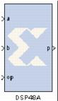

|
|
The Xilinx DSP48A block is an efficient building block for DSP applications that use Xilinx Spartan-3A DSP devices. For those familiar with the DSP48 and the DSP48E, the DSP48A is a ‘light’ version of primitive.Key features for the DSP48A are a dedicated C-port and pre-adder. The DSP48A combines an 18-bit by 18-bit signed multiplier with a 48-bit adder and programmable mux to select the adder’s input. Operations can be selected dynamically. Optional input and multiplier pipeline registers can be selected as well as registers for the subtract, carryin and opmode ports. The DSP48A block can also target devices that do not contain the DSP48A hardware primitive if the Use synthesizable model option is selected.